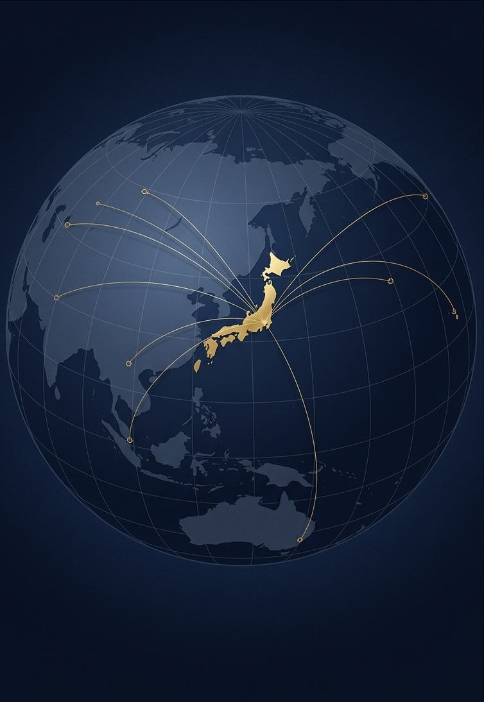

冷凍食品専門商社での19年間の実務経験と、グローバルなネットワークを強みに、製造から販売まで一貫した調達・営業支援を提供します。
Leveraging our 19 years of practical experience at a frozen food specialty trading company and our global network, we provide consistent procurement and sales support from manufacturing to sales.
情熱と知性で道を切り拓き、誠意あるGIVERとして豊かな社会を共創する。 Blazing trails with passion and intelligence, co-creating a prosperous society as a sincere GIVER.
この言葉がJCSギバのすべての活動の根幹です。私たちは常にこのミッションを胸に、クライアントと社会に価値を届け続けます。
These words are the foundation of all activities at JCS Giba. With this mission always in our hearts, we will continue to deliver value to our clients and society.
ビジネスの基本は「奪い合い」ではなく「与え合い（GIVER）」であると信じています。私たちはGIVERとして、クライアントの想像を超える価値を先んじて届けます。頭で考えるだけでなく、現場に足を運び、手と頭を動かし続けることで、関わる人々の未来を照らす存在となります。
We believe that the core of business is not "competing to take" but "sharing (GIVER)". As a GIVER, we deliver value that exceeds our clients' expectations in advance. By not only thinking but also visiting the field and keeping our hands and minds active, we aim to be a presence that brightens the future of everyone involved.
私たちが日々の意思決定と行動において最も重んじる3つの原則です。
Our core values, named "JCS" after the Japanese words for our three guiding principles: Jounetsu (Passion), Chisei (Intelligence), and Sincerity.
私たちの原点は、妥協なき熱意です。食の現場から最先端のシステムまで、心を燃やして全力で挑みます。
Our origin is uncompromising enthusiasm. From the food industry floor to cutting-edge systems, we burn with passion and tackle challenges with all our might.
私たちの武器は、学び続ける知性です。深い構造を捉え、知恵とアイデアで複雑な課題を解きほぐします。
Our weapon is continuous learning. We grasp deep structures and unravel complex issues with wisdom and ideas.
私たちの誇りは、裏表のない誠実さです。約束を守り、ごまかさず、関わるすべての人と真正面から向き合います。
Our pride is honesty without pretense. We keep our promises, do not deceive, and face everyone involved head-on.
大手コンビニエンスストアチェーン本部で店長・スーパーバイザーとして9年間経験を積んだ後、冷凍食品の専門商社で19年間、海外仕入先開拓から商品開発、現地生産立ち合い、出荷管理、在庫管理、販路開拓、営業まで、調達から販売を一貫して担当してきました。
After gaining 9 years of experience as a store manager and supervisor at a major convenience store chain headquarters, I spent 19 years at a frozen food specialty trading company. There, I was consistently responsible for everything from procurement to sales, including developing overseas suppliers, product development, on-site production setup, shipping management, inventory control, sales channel expansion, and sales.
食品流通に一貫して携わる中で、製造と販売の両面を理解し、現場に根ざした実務経験を積んできました。食品輸入商社では自社ブランド商品(NB商品)の立ち上げを任され、商品拡充と販売チャネル開拓を進めて主力事業へ育てました。西日本を中心に多くの新規得意先を開拓し、信頼関係を築きました。
Through my consistent involvement in food distribution, I have gained practical, field-rooted experience while understanding both manufacturing and sales. At a food import trading company, I was entrusted with launching our own brand products (NB products), growing it into a core business by expanding the product lineup and developing sales channels. I established strong relationships of trust by developing many new accounts, especially in Western Japan.
また、執行役員・部長として約15名のチームを率いた経験があり、現場感覚とマネジメントを兼ね備えたプレイングマネージャーとして成果と人材育成の両面に取り組んできました。
Additionally, I have experience leading a team of about 15 members as an executive officer and department manager. As a playing manager combining field sensitivity and management skills, I worked on both achieving results and developing talent.
調達から販売まで包括的に支援し、食品・流通業界の複雑な課題を解きほぐします。
Providing comprehensive support from procurement to sales, unraveling complex challenges in the food and distribution industries.
海外・国内食品メーカーと国内流通企業との最適なマッチングおよび商品売買の仲介を行います。
Providing optimal matching between overseas/domestic food manufacturers and domestic distribution companies, and brokering product sales.
海外食品メーカーへの日本市場理解促進、および効果的なマーケティング・販売戦略の策定コンサルティングを提供します。
Helping overseas food manufacturers understand the Japanese market and providing consulting for establishing effective marketing and sales strategies.
海外食品メーカーの国内営業支援、および国内流通企業の海外での調達活動を、両面から包括的に現地レベルで支援します。
Providing comprehensive on-the-ground support from both sides: assisting domestic sales for overseas manufacturers, and supporting overseas procurement for domestic distribution companies.

冷凍食品専門商社での19年間の実務経験をもとに、調達から販売まで現場に根ざした一貫した知見とプロセス改善を提供します。
Based on 19 years of practical experience at a frozen food specialty trading company, we provide hands-on, consistent insights and process improvement from procurement to sales.
海外仕入先開拓・現地生産立ち合いで培った国際的で信頼のあるネットワークを活用し、最適なパートナーをご紹介します。
Leveraging a trusted international network built through developing overseas suppliers and setting up on-site production, we connect you with the ideal partners.
日本市場への参入戦略から、具体的なマーケティング、販売計画、実行サポートまで、形だけに終わらない泥臭い伴走型支援を提供します。
From entry strategies for the Japanese market to specific marketing, sales plans, and execution support, we provide hands-on, results-oriented partnership.
ヒアリングから実際の活動サポートまで、お客様のニーズに丁寧に伴走します。
We walk with you step-by-step from initial hearing to actual operational support based on your needs.
お客様の現在の課題、開拓したい市場、調達したい原料などのニーズを丁寧に伺います。
We carefully listen to your current challenges, target markets, raw materials to procure, and other needs.
培ったネットワークから最適な取引先候補・生産工場を選定し、初回提案を準備します。
We select the best partner candidates and production factories from our established network to prepare the initial proposal.
日本市場やターゲットに合わせた仕様の検討、マーケティングや販売戦略を立案します。
We review specifications tailored to the Japanese market and targets, and formulate marketing and sales strategies.
商談・現地での生産立ち合い、品質調整、出荷管理まで含め、包括的に伴走・推進します。
We comprehensively support and drive the project, including business negotiations, on-site production attendance, quality adjustments, and shipping management.
海外・国内食品メーカー様とお得意先様とのマッチング、日本市場参入のサポート、海外調達先開拓など、お困りの課題がございましたらお気軽にメールにてご相談ください。誠意をもってお応えします。
If you have any challenges such as matching overseas/domestic food manufacturers with clients, supporting entry into the Japanese market, or developing overseas procurement sources, please feel free to contact us by email. We will respond with sincerity.
メールでお問い合わせ Contact via Email